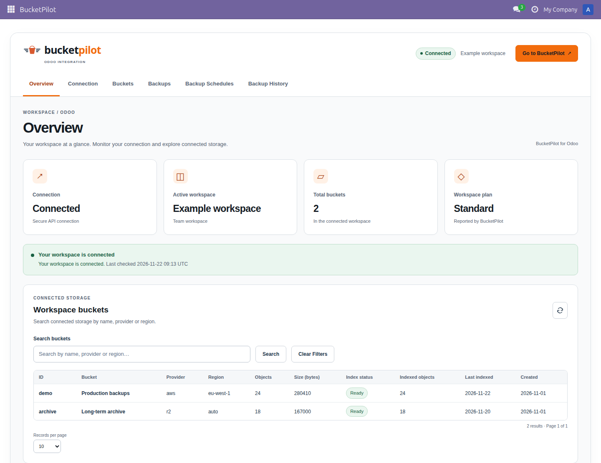
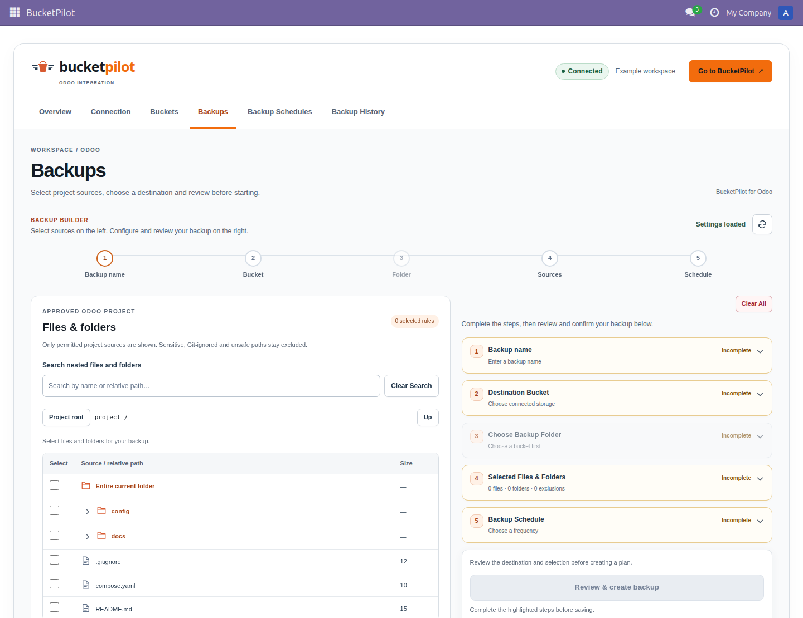
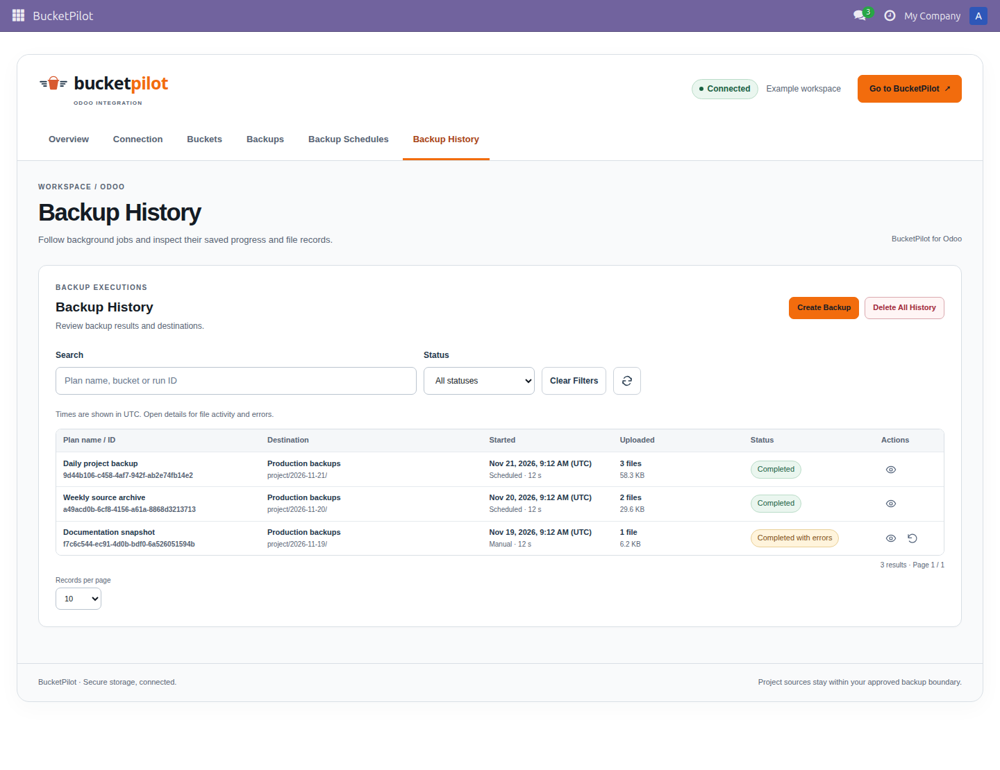
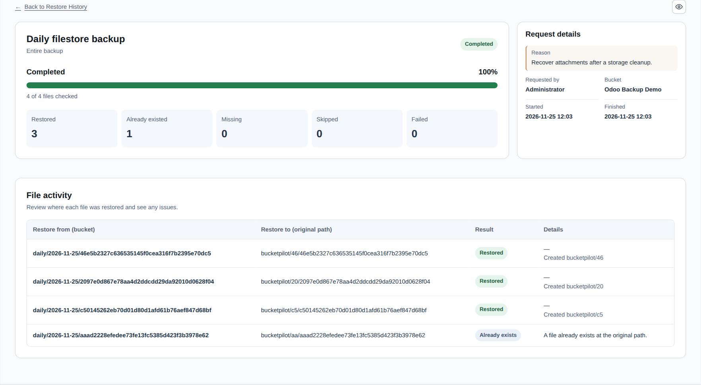

Back up your Odoo filestore on demand or on a schedule, and restore files to their original paths.

Search and browse the filestore, expand folders, and select individual files or entire folders.
Run a backup immediately, choose a one-time date, or schedule daily, weekly or monthly backups in your timezone.
Follow progress in Odoo, inspect which files were confirmed and enable optional email reports through Odoo SMTP.
Name the backup, choose the bucket and destination folder, and review the source and schedule before saving.

Backup History records execution status, the destination and confirmed upload totals.

Start from Backup History, choose an individual file or the entire backup, and enter a reason in the review dialog. The worker uses the exact object key from the backup to download missing files and return them to their original filestore paths.
